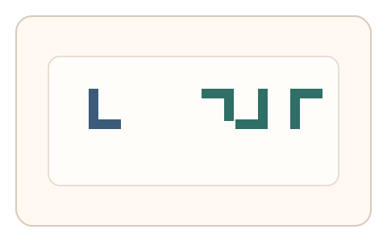
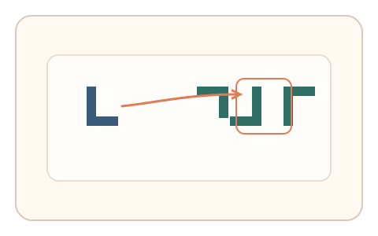
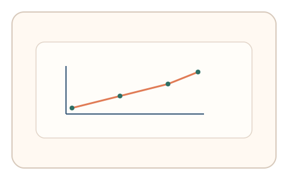

#22
视觉思考范式：空间/结构/直觉
已扩展
心理旋转时间曲线
通过旋转角度与反应时曲线的匹配关系检验心理旋转特性。
概念原文
给定目标形状与不同旋转角的候选，要求快速匹配；系统记录“旋转角度—反应时”曲线是否符合人类心理旋转规律。
通过反应时函数形态判定真实性，而非正确率。
研究背景
心理旋转研究表明，目标与候选形状之间的角度差越大，反应时往往越长，形成近似线性关系。利用这一时间曲线可形成较难伪造的行为信号。
核心机制
- 展示目标形状与多角度旋转候选。
- 要求用户快速匹配目标并记录反应时。
- 在多个角度条件下收集反应时序列。
- 拟合角度-反应时曲线并进行判定。
用户流程
- 步骤 1：用户看到目标形状与候选集合。
- 步骤 2：用户选择匹配形状并完成点击。
- 步骤 3：系统拟合时间曲线并输出判定。
判定信号
反应时随角度差的斜率
人类心理旋转呈现随角度增大的时间成本。
角度差条件下的错误分布
角度更大时错误率上升具有稳定趋势。
判定逻辑
拟合角度差与反应时的线性趋势，要求斜率与误差分布落在人类范围；反应时近似常数或随机波动判异常。
对抗面
- 脚本预计算答案并固定延时响应
- 重放真实用户的作答序列
防御与缓解
- 动态生成形状与角度，避免固定答案
- 混合镜像与干扰角度，增加判断复杂度
- 叠加微时序与鼠标轨迹信号提高伪造成本
可达性与风险
提供更长时间窗口与替代通道（非旋转类任务），避免对空间旋转能力受限用户过度惩罚。
- 不同年龄与经验导致反应时差异
- 过多试次可能增加疲劳
可视化状态

状态 1：旋转匹配任务
目标形状与多角度候选同时出现。

状态 2：快速匹配
用户选择与目标相同的旋转形态。

状态 3：时间曲线
拟合角度与反应时曲线并判定。
参考资料
Mental rotation
说明心理旋转与反应时关系。
Reaction time
说明反应时作为行为特征的基础。